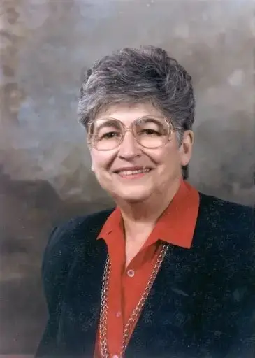

Toutes les innovations et découvertes en informatique et en médecine auxquelles Thelma Estrin a contribué au cours de sa carrière :
-1954 : Participation à la création du WEIZAC, le premier ordinateur électronique construit en Israël, avec son mari Gerald Estrin.
-1961-1962 : Création d'un système de conversion des signaux électriques produits par les neurones en données numériques que les ordinateurs peuvent comprendre et analyser.
-1965 : Développement d'un système informatique permettant de recevoir et d'analyser les signaux EEG (électroencéphalogrammes) pendant leur enregistrement.
-1969 : Développement d'une méthode permettant de représenter visuellement, grâce à un ordinateur, l'évolution de l'activité électrique du cerveau dans le temps et dans différentes zones.
-1974 : Participation au développement d'un système informatique permettant de créer des cartes du cerveau à partir d'images médicales et d'informations anatomiques, afin de mieux localiser certaines zones cérébrales.
-1981 : Participation aux recherches sur un système expert fonctionnant sur micro-ordinateur, destiné à aider les professionnels de santé dans certaines décisions médicales.